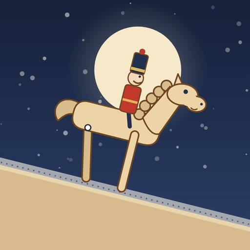
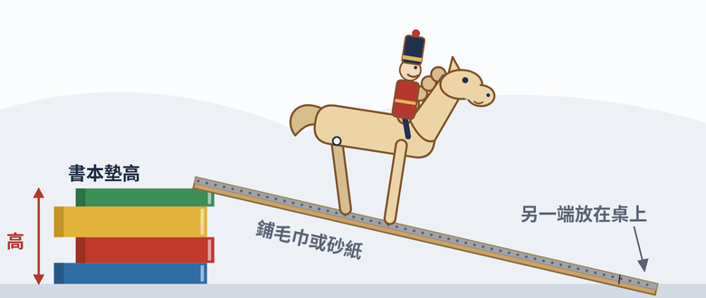

秘密 1
跨、站、跟
前腳先跨出去，身體站到前腳上，後腳再跟上來。兩隻腳輪流撐住身體，就一步一步往前走。
在木馬身上：前腳踏出去，後腳像鐘擺一樣盪過來跟上。
國圖冬季講堂・胡桃鉗大戰老鼠王
調坡度、移士兵、換地面，看木馬能不能一步一步走下坡。

你是在 LINE 或 Facebook 裡打開的。影片不順或想加到主畫面時，請按右上角選單，改用 Safari 或 Chrome 開啟。
？
看看它會怎麼走……先猜猜看！
秘密 1
前腳先跨出去，身體站到前腳上，後腳再跟上來。兩隻腳輪流撐住身體，就一步一步往前走。
在木馬身上：前腳踏出去，後腳像鐘擺一樣盪過來跟上。
秘密 2
冰面很滑，企鵝一路滑下去；草地很粗糙，把企鵝抓住。抓住你的力量，叫做摩擦力。
在木馬身上：坡道貼了砂紙，讓地面抓住木馬的腳。
秘密 3
士兵坐太前面，木馬會往前翻；太後面，走一步就卡住；坐剛好，才能一步一步走下去。
在木馬身上：移動士兵，就是在調整重心。
重力是它的電池
跨站跟、地面抓得住、士兵坐對位置，讓它一步一步走下山，不滑也不翻。

挑戰看看：坡越陡，士兵要往馬頭還是馬尾移？
書本高度換算角度
大約
量坡道板的長度，和墊高那一端的書疊高度。
想要跟課堂一樣的角度，書要疊多高？
| 13° | 17° | 21° |
|---|---|---|
| — | — | — |
遇到問題：找老師，或點網頁最下面的版本號，截圖給老師看。